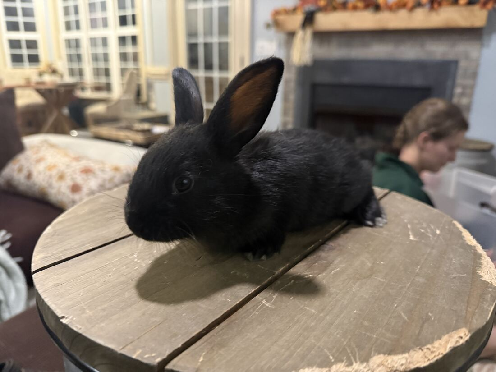
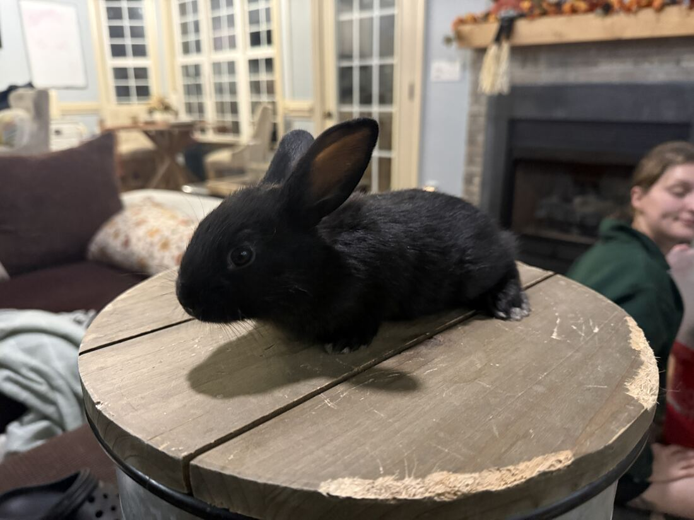

Black A solid black · a Darrel
Jet black head to toe, no white at all. The ear linings show a warm brown edge in lamplight, which is normal for black.
Likely genes
aaselfen enno spottingC?2/3 CcD?Dd if Yoseph
Top sire pick, if a buckNo broken gene, so breeding him back to Lucky can't make Charlies.
Folder
01-black-a · IMG_0450 to 0451